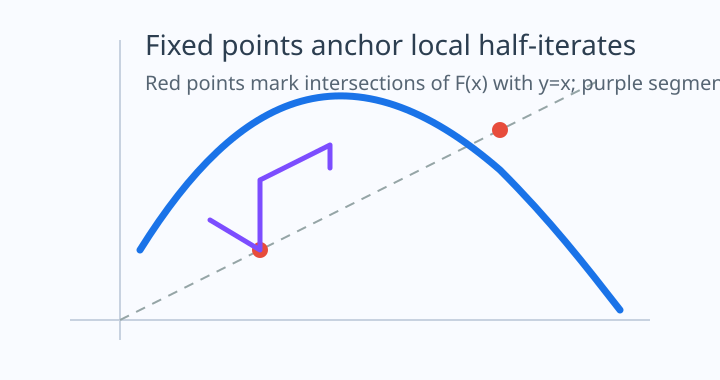

Fixed Points as the Organizing Principle of Functional Iteration
1. Motivation
The equation \(f(f(x)) = F(x)\) looks deceptively simple. One might expect it to behave like an algebraic square root: perhaps one merely "takes half an iterate" in the same way one takes a square root of a number. The difficulty is that composition is geometric rather than multiplicative. The map \(f\) must send points along the orbit structure of \(F\), preserve local regularity, and remain compatible with the fixed-point geometry of the target.
This is why fixed points appear immediately in every serious discussion of half-iterates. If \(x^*\) satisfies \(F(x^*) = x^*\), then the orbit neither escapes nor oscillates at that point; it is the natural place where local linearization, local series methods, and conjugacy-based tools can be anchored. Without such anchors, real half-iterates are often obstructed or become purely local, branch-dependent objects.
resources/manim_half_iterates.py provides a reproducible
animation scaffold for orbit and cobweb scenes.

2. Fixed Points and Half-Iterates
Let \(F : D \to D\) be a self-map. A functional square root or half-iterate is a map \(f : D \to D\) satisfying \[ f^{\circ 2}(x) = f(f(x)) = F(x). \] A point \(x^*\in D\) is a fixed point of \(F\) if \(F(x^*) = x^*\).
The local derivative adds another layer. If \(x^*\) is a smooth fixed point and \(f\) is differentiable, then \[ F'(x^*) = \bigl(f'(x^*)\bigr)^2. \] Hence the multiplier of \(F\) at a fixed point constrains the possible real branches for a local half-iterate. This simple identity already explains why positive, negative, neutral, and zero multipliers behave so differently.
3. The Solvable and Unsolvable Contrast
The site's theory page already contrasts \(F(x)=x^2-2\) with \(F(x)=x^2+1\). This contrast is not a curiosity; it is the first dynamical diagnostic one should run before attempting symbolic or numerical construction.
The graph intersects \(y=x\) at \(-1\) and \(2\), giving real anchors for local study.
Over the reals the graph stays above \(y=x\), so there is no real fixed point to linearize around.
In the first case, the real fixed points make local conjugacy plausible. In the second case, every real iterate is pushed upward, so one does not even obtain a natural real fixed-point chart. This does not prove that all half-iterates are impossible in other categories, but it explains why the real, explanatory, and browser-friendly approaches in this repository begin from fixed points instead of from global guesswork.
4. Local Conjugacy and Why It Matters
Once a fixed point \(x^*\) is found, set \(y = x - x^*\) and write the shifted map as \[ G(y) = F(x^* + y) - x^*. \] If \(0 < \lambda = G'(0) \neq 1\), then the classical Schröder framework seeks a change of coordinates \(\Phi\) satisfying \[ \Phi(G(y)) = \lambda \, \Phi(y). \] In that coordinate system, iteration becomes multiplication, so the local half-iterate is formally \[ h(y) = \Phi^{-1}\bigl(\sqrt{\lambda}\,\Phi(y)\bigr), \qquad f(x) = x^* + h(x-x^*). \]
This is the logic now exposed in the new analytic solver mode. It does not claim global exactness; instead, it computes a local model, warns when the multiplier is parabolic or non-positive, and verifies the result by checking numerically that \(f(f(x))\) agrees with \(F(x)\) near the chosen fixed point.
5. Applications to the Site Solver
The upgraded solver combines this fixed-point viewpoint with the composita recurrence already developed in the rest of the project.
- Paper mode remains the right place for formal power-series roots of \(A^{\circ 2^m}(x)=F(x)\).
- Analytic mode begins from a user-chosen fixed point and shows whether the local half-iterate problem is structurally well posed.
- Orbit exploration lets the reader see immediately whether a map is attracted, repelled, or pushed away from fixed points.
- Graphical verification keeps the project explanatory: formulas are displayed, then checked by recomposition.
For the formal generating-function background, see the composita paper trail collected on the bibliography page; for the broader theory of iterative functional equations, consult the additional references now listed there as well.
Comments